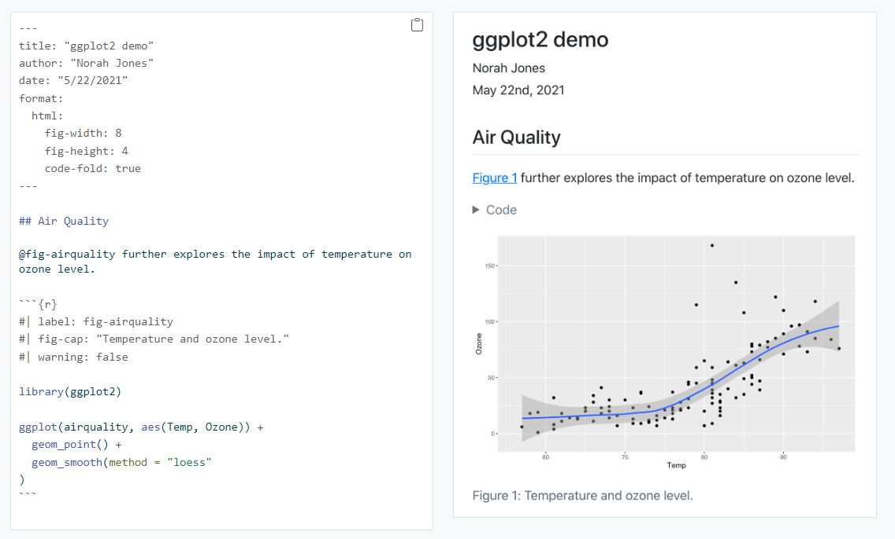
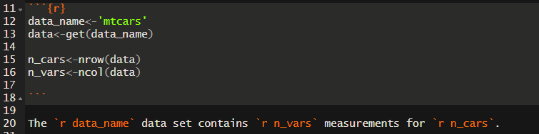
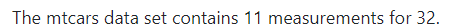
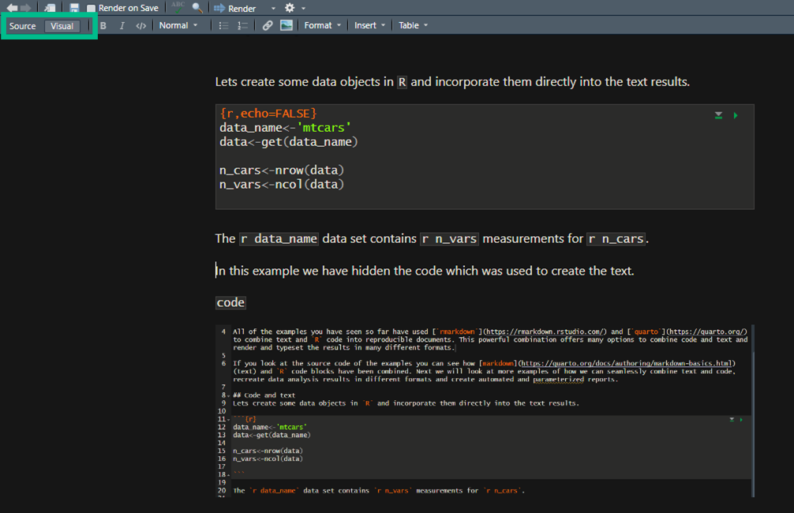
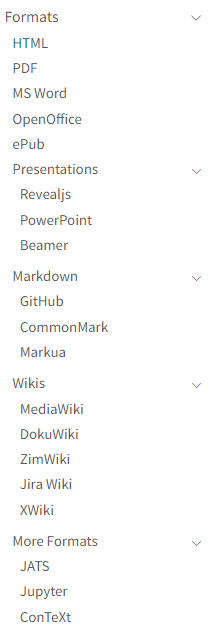
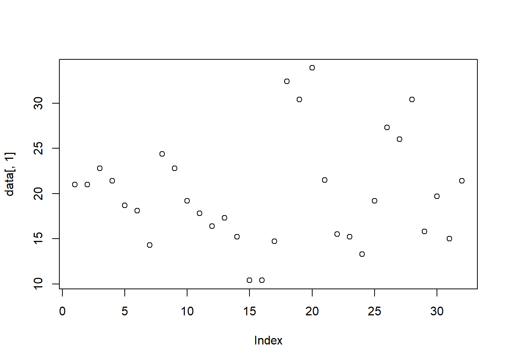
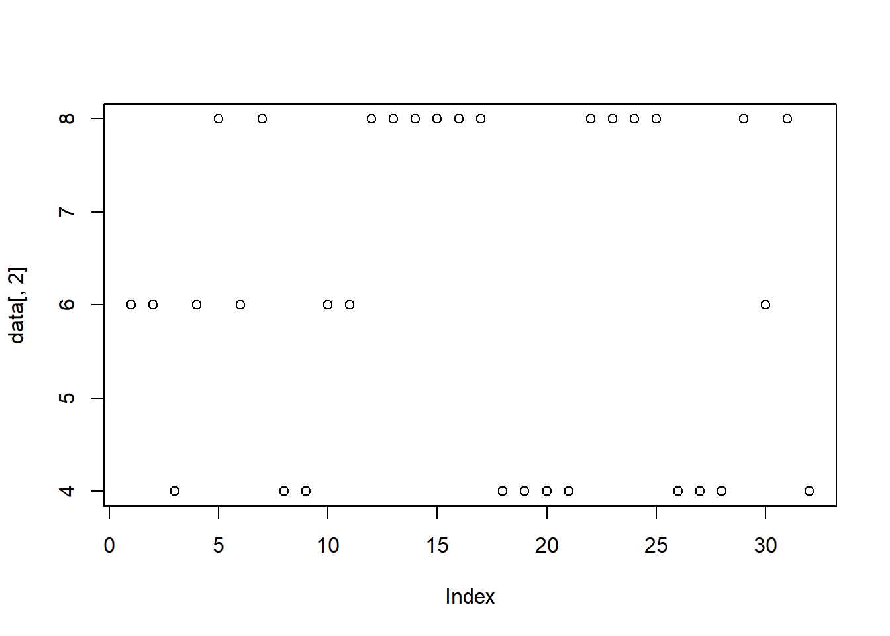

chatGPT 4 04/2024 - duck creating a reproducible report using the R programming language, colorful cartoon, solarpunk
All of the examples you have seen so far have used rmarkdown and quarto to combine text and R code into reproducible documents. This powerful combination offers many options to combine code and text, which can be rendered in different formats and typeset in custom layouts.

If you look at the source code of the examples you can see how markdown (text) and R code blocks have been combined. Next we will look at more examples of how we can seamlessly combine text and code, recreate data analysis results in different formats and create automated and parameterized reports.
7.1 Code and text
Lets create some data objects in R and incorporate them directly into the text results.
The mtcars data set contains 11 measurements for 32 samples.
In this example we have hidden the code which was used to create the text.
code

text

We have also used css to style the the image of the results (added a border).
We can use R studio UI to switch between different representations the code and rendered the final results in different formats. Change between source and visual representations in the top left corner.

The visual editor can also be used to create many markdown scaffolds to help with the type setting and layout.
We can configure our report’s front matter to define default options for a variety of output formats.

Their are many options we can specify for our report using the front matter code block at the beginning of our document which is designated using a modified yaml format.
For example, try adding the following block with your custom definitions and render the report.
---
title: Reproducible reports
author: Best ever!
date: "04/1/2023"
---
We can also execute custom R code in the front matter.
---
title: Reproducible reports
author: Your name goes here
date: "May 21, 2024"
---
Check out the quarto gallery for more inspirational examples.
7.2 Parameterized reports
We can specify options for our code in the parameters block in the front matter. For example, we can optionally create a custom code and text block summary. We will add the params option to our document’s front matter.
The following sets the variable named summarize_columns to TRUE when we execute R code blocks, which we can use to dynamically modify our report.
params:
summarize_columns: TRUE
Now we can execute custom logic in our report’s code blocks based on the values in the params variable.
if(exists('params') && params$summarize_columns){ .text<-paste(colnames(get(data_name)),collapse=', ') .text<-paste('The data contains the following variables:\n',.text)} else { .text<-tags$p('\U2717 Hello world, not unlocked.',style ="color: red;") %>%as.character()#Unicode Characters: https://www.w3schools.com/charsets/ref_utf_dingbats.asp}# HTML(.text) #optimized for browsers# cat(.text) # simple text
Params are useful to create custom reports. For example we can supply the parameters when rendering using command line arguments (run the flowing in the terminal).
quarto render reproducible_reports.qmd -P summarize_columns:FALSE
To make this more interesting, lets make the data a changeable parameter.
Quarto offers many layout options. The simplest control is based on the number of columns or rows we want the code results to fill. For example to create two figures side by side we can use the following.
::: {layout-ncol=2}
<CODE>
:::
plot(data[,1])

plot(data[,2])

When using the html format for the report we have many other options like creating tabsets.
Next let’s add references to our report. We can specify the bibliography in the front matter as follows. Note this variable can also be set for all documents in the _quarto.yml.
bibliography: references.bib
The .bibBibTex format can be created using various tools and looked up for any R library using citation('library'). For example lets add a citation for the Rbase library to our report.
citation('base')
To cite R in publications use:
R Core Team (2024). _R: A Language and Environment for Statistical
Computing_. R Foundation for Statistical Computing, Vienna, Austria.
<https://www.R-project.org/>.
A BibTeX entry for LaTeX users is
@Manual{,
title = {R: A Language and Environment for Statistical Computing},
author = {{R Core Team}},
organization = {R Foundation for Statistical Computing},
address = {Vienna, Austria},
year = {2024},
url = {https://www.R-project.org/},
}
We have invested a lot of time and effort in creating R, please cite it
when using it for data analysis. See also 'citation("pkgname")' for
citing R packages.
We can add the following entry to references.bib.
@Manual{R,
title = {R: A Language and Environment for Statistical Computing},
author = {{R Core Team}},
organization = {R Foundation for Statistical Computing},
address = {Vienna, Austria},
year = {2022},
url = {https://www.R-project.org/},
}
Now we can cite R using the following syntax [@citation]. We need to add an additional code block to define where the references should be rendered.
R Core Team. 2022. R: A Language and Environment for Statistical
Computing. Vienna, Austria: R Foundation for Statistical Computing.
https://www.R-project.org/.